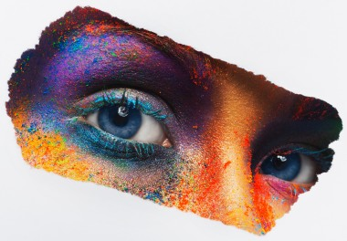
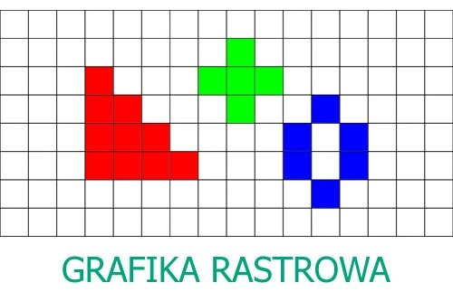
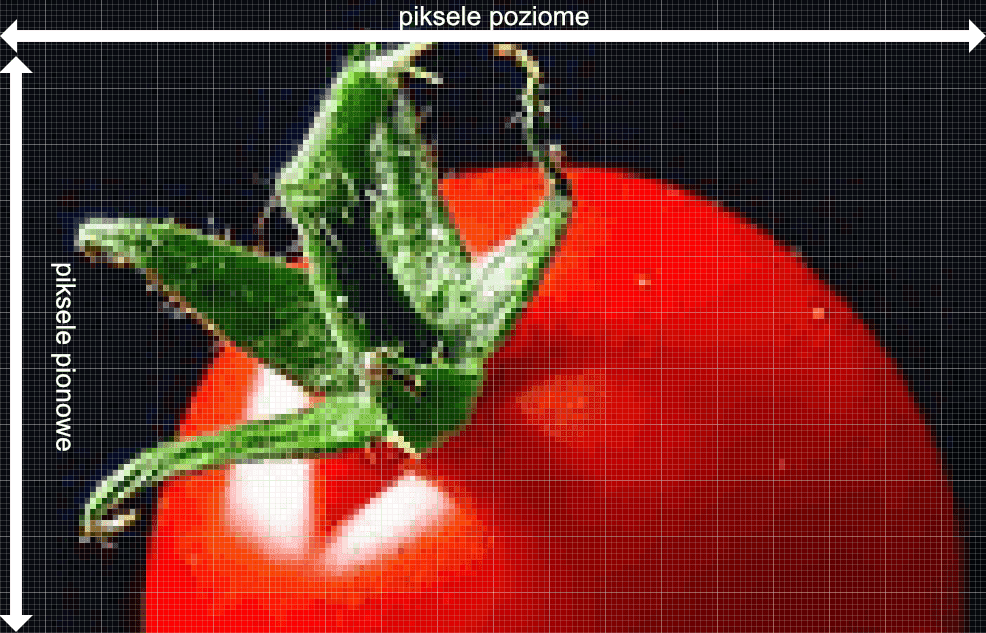

Grafika rastrowa to sposób reprezentowania obrazu jako siatki pikseli. Każdy piksel ma przypisany kolor i jasność, a całość tworzy obraz. Grafika rastrowa jest używana w przypadku zdjęć, obrazów o dużej szczegółowości, jak fotografie, obrazy 3D, itp. Jednym z jej głównych ograniczeń jest utrata jakości przy powiększaniu obrazu, ponieważ rozdzielczość pikseli jest stała.
Grafika Rastowa

üß© Cechy grafiki rastrowej:
1.Zbudowana z pikseli Każdy obraz składa się z siatki malutkich punktów (pikseli), z których każdy ma swój kolor.
2. Traci jakość przy skalowaniu Powiększenie obrazu powoduje rozmazanie i tzw. pikselizację.

✅ Zalety grafiki rastrowej:
1. Realistyczne odwzorowanie detali Świetnie nadaje się do zdjęć i obrazów z dużą ilością szczegółów (np. tekstury, cienie, przejścia tonalne).
2. Dużo różnych barw, wyraźny obraz.

❌ Wady grafiki rastrowej:
1. Utrata jakości przy skalowaniu: Po powiększeniu obraz staje się rozmazany (pikselizacja).
2. Duży rozmiar plików :Zwłaszcza przy wysokiej rozdzielczości i wielu kolorach (np. zdjęcia w formacie TIFF, PNG).


üé® Programy do grafiki rastrowej:
1. Adobe Photoshop :Profesjonalny edytor grafiki rastrowej, używany m.in. w fotografii, projektowaniu i reklamie.
2. GIMP (GNU Image Manipulation Program) Darmowa alternatywa dla Photoshopa, open-source.
3.Paint.NET Lekki, prosty edytor graficzny dla Windows
üéØ Zastosowania grafiki rastrowej:
1.Strony internetowe Ikony, bannery, tła, grafiki do mediów społecznościowych (często w formacie .JPG, .PNG, .GIF).
2. Gry komputerowe Tekstury, sprite’y postaci, tła (choć coraz częściej łączy się z grafiką wektorową).
üóÇÔ∏è Rozszerzenia plik√≥w grafiki wektorowej:
1.Rozszerzenie:.JPG/.JPEG,.PNG,.PSD,.XCF
2.Opis:
Popularny format do zdjęć,Bezstratny format z obsługą przezroczystośc, Format Photoshopa,Format GIMP-a